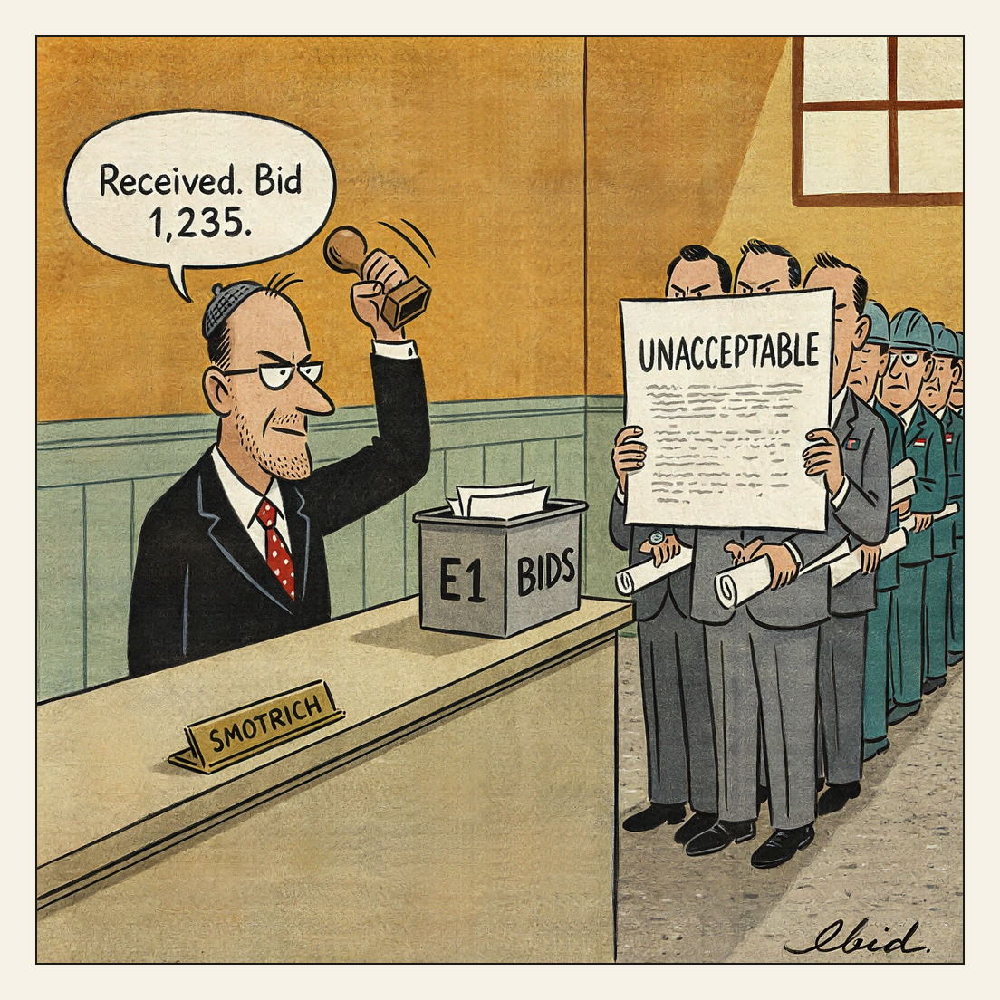

Bids close the 19th. Election's the 27th.
Tender Process

The UK, France, Germany, Italy and Canada condemned Israel's decision to issue tenders for 1,234 settlement homes in the occupied West Bank's E1 area. The E1 zone covers about 12 sq km between East Jerusalem and the Maale Adumim settlement, and critics say building there would cut the West Bank in two; the bid deadline is 19 October, days before Israel's 27 October general election. Israel's foreign minister rejected the criticism; all settlements in occupied territory are illegal under international law.